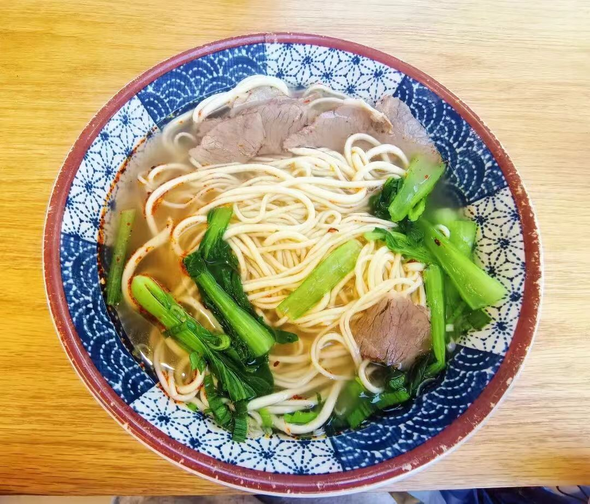
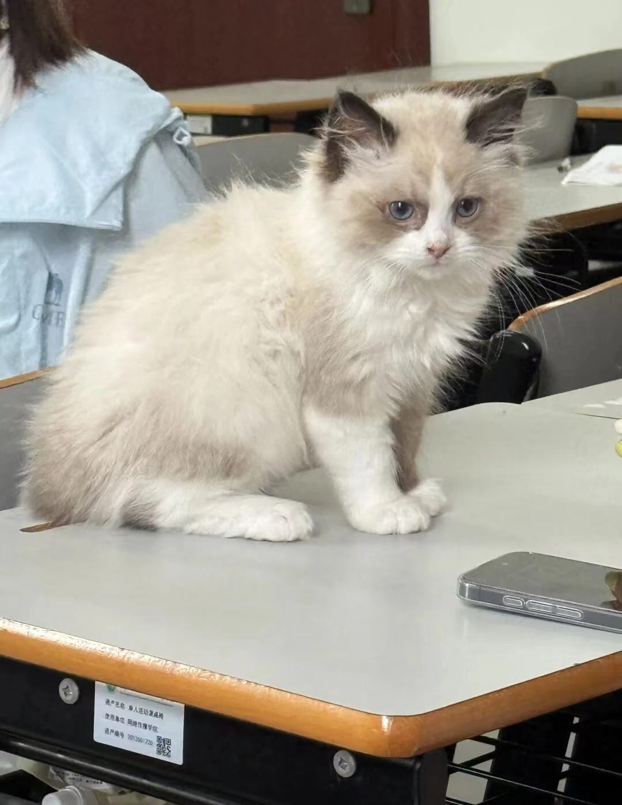
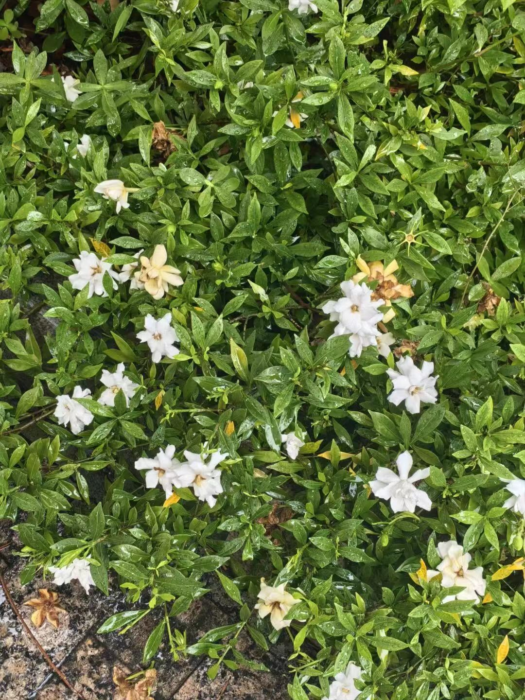
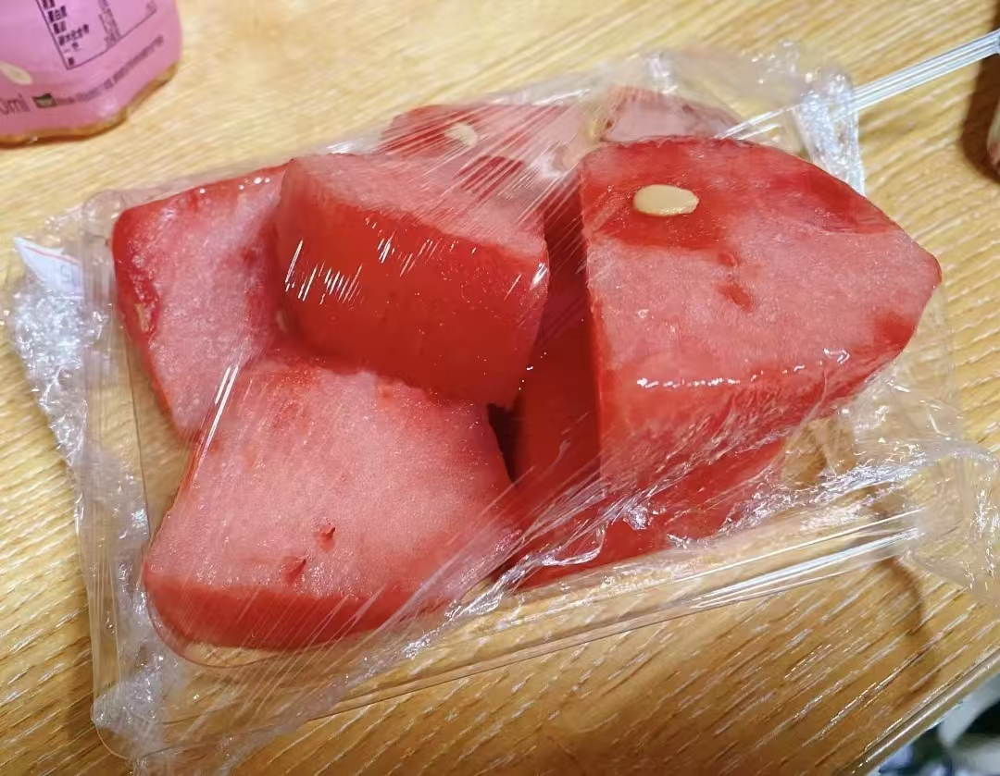

✦
✧
♡
栀子花、小猫咪与失踪的雨伞




好室友的甜蜜西瓜🍉
✧ 周一 · 牛肉面
周一和好朋友一起吃午饭聊聊天，开心开心～不能吃辣的人就加了一点点点辣椒🌶 牛肉面好次呀！
✧ 周三 · 书包里的小猫咪周三！同学偷偷把小猫咪装书包，带来和我们一起上课了，哈哈哈哈。超级可爱呀！走读的哦～没有在学校养猫🐱
老师下来了发现了，我们开玩笑和她说这是假的┗(＾0＾)┓ 小猫咪特别可爱，cute，以后也想养了～
✧ 栀子花开栀子花都开了，去上课的路上伴随着香气，好喜欢栀子花的味道呀～雨天过后更好闻了，夹杂着一丝青草香和雨水香，好清新，我好喜欢，感觉情绪也变好了。就是这种花的小虫子有一点多。
✧ 周五 · 美工与拌饭灾难周五下午依旧练美工ing(｡･ω･｡) 中午吃这个拌饭，谁知道它撒袋子里了(╥_╥) 也就沾了一手油吧，然后桌上也有，居然还弄到我裤子上了😭 谁懂！我见不得我衣服上有一滴油……下午好心情被毁了一会儿。
下午紧接着就去部门工作了一下午，已榨干……晚上回来收到了好室友给我的西瓜🍉呀！甜蜜🥰
✧ 周六 · 国美毕业展周六来中国美术学院看毕业展了，实力都好强呀，审美很高，好看爱看😍 还有很多作品我都拍照了，但是太多了，我不放出来了哦～
下午回来，来找我昨天晚上丢失忘记拿的雨伞。手上这把借我好室友的(T⌓T) 找寻未果，回去了☹️ 我的雨伞，你在哪里？！快点出现吧……
" 雨伞快回来，
栀子花开的季节不能没有你。 ✦ "
栀子花开的季节不能没有你。 ✦ "